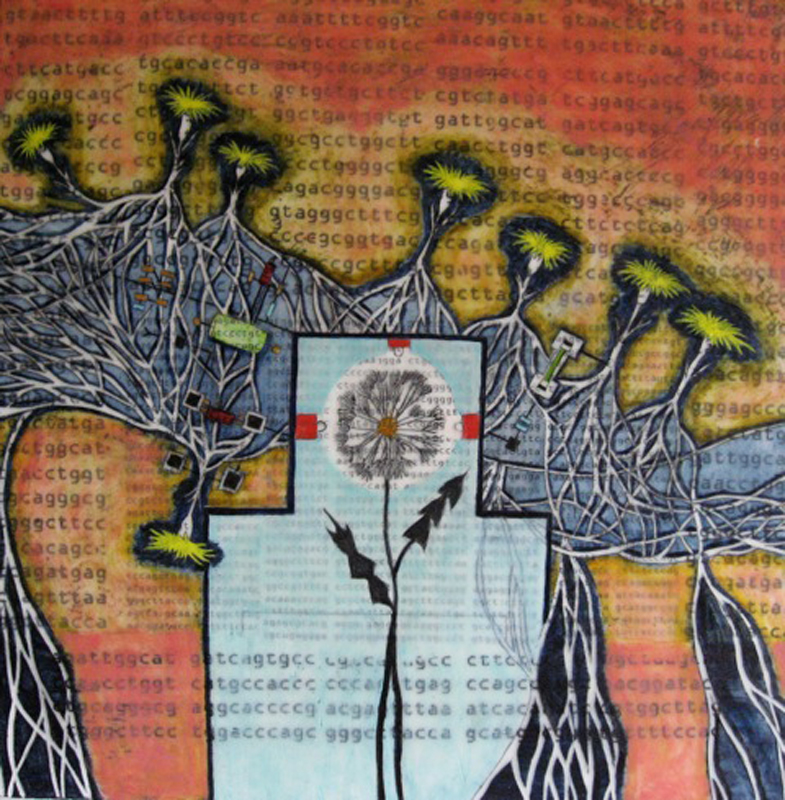
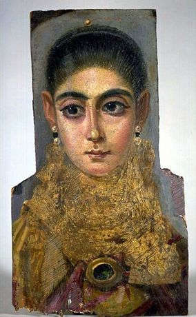

Encaustic Group July 2012
July 2012 Encaustic Painters
 |
Fayum Funeral Portrait, Mummy Portrait of a Woman, Antinoopolis, End of the Reign of Trajan, 98-117 A.D., Wax portrait on wood. |
Encaustic painting is one of the oldest painting mediums in our culture. Encaustic painting was practiced by Greek artists as far back as the 5th century B. C.
Wax is an excellent preservative of materials. It was from this use that the art of encaustic painting developed.
The use of encaustic on panels rivaled the use of tempera. Pliny refers to encaustic paintings several hundred years old in the possession of Roman aristocrats of his own time.
The nature of encaustic to both preserve and color gave it wide use on the stone work of both architecture and statuary.
Perhaps the best known of all encaustic work are the Fayum funeral portraits painted in the 1st and 2nd centuries A.D. by Greek painters in Egypt. Many of these pieces have survived to our own time, and their color has remained as fresh as any recently completed work.
In the great period of economic instability that followed the decline of the Roman empire, encaustic fell into disuse, it became a lost art. The process was cumbersome and painstaking, and the cost of producing it was high. It was replaced by tempera.
In the 20th century, encaustic is a far less formidable technique. This factor has created a resurgence of encaustic painting, and it is once again taking its place as a major artists' medium.
— Ralph Mayer, The Artist's Handbook
NKG Boston is pleased to present four artists who are using this ancient medium in their contemporary practices.
Gallery II
NKG June 29 - July 20 2012
Opening Reception Friday July 6, 2012 5-8 pm
NK Gallery
450 Harrison Avenue #61
Boston MA 021118
Gallery hours Wed- Sat 11am – 4pm